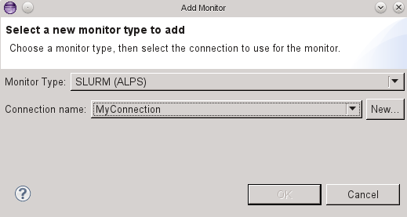
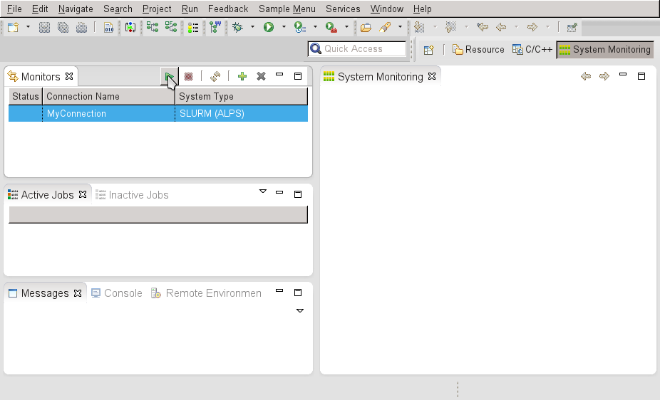

On Cray target systems SLURM can be combined with the Application Level Placement Scheduler (ALPS). To submit parallel applications to this target system, follow the instructions for Running Parallel applications.
ALPS provides valuable additional information for the monitoring perspective of PTP. The implicitly defined system hierarchy of the target system can be obtained. This allows to map jobs to the different hierarchy levels instead of simply mapping jobs to a two-level hierarchy of compute nodes and cores.
In order to use additional monitoring information provided by ALPS, a new monitoring connection has to be configured in the System Monitoring perspective. Choose SLURM (ALPS) as monitoring type.
Afterwards you can start monitoring the target system by clicking on the run button.
